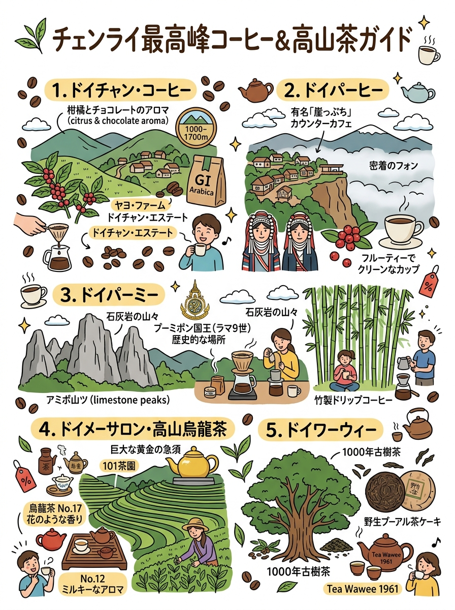
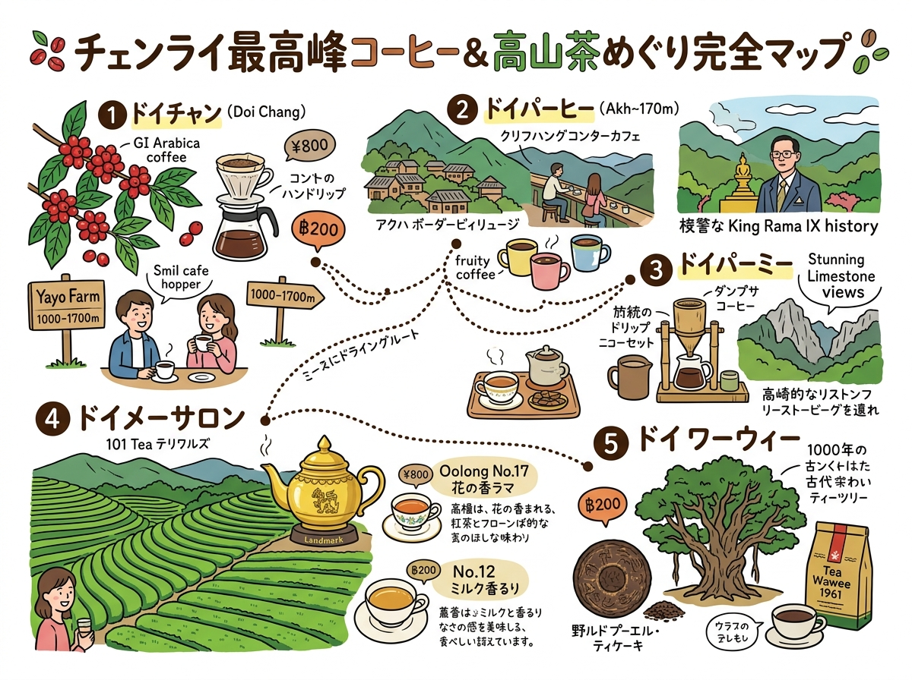

01
ドイチャン・アラビカコーヒー（กาแฟดอยช้าง / Doi Chaang）
標高1,000〜1,700mの森林下で育つ世界水準の単一産地アラビカ。タイ・EU・日本で地理的表示（GI）登録。フローラルで華やかな柑橘系の明るい酸味、ダークチョコやナッツの芳醇なコク、カフェイン1.1%以下のクリーンな後味。
チェンライが誇るドイチャンコーヒーとドイメーサロンの烏龍茶の品種、名産地、銘柄・名店リスト。
クリックすると拡大して詳細を確認・印刷できます。

旅行者の持ち歩き・印刷に適した手書き風インフォグラフィック。

位置関係やルート、全体像を俯瞰できるワイドデザイン。
現地調査および公的データに基づく最新詳細情報。
標高1,000〜1,700mの森林下で育つ世界水準の単一産地アラビカ。タイ・EU・日本で地理的表示（GI）登録。フローラルで華やかな柑橘系の明るい酸味、ダークチョコやナッツの芳醇なコク、カフェイン1.1%以下のクリーンな後味。
標高1,200〜1,400mのミャンマー国境至近アッカ族集落。王室ドイトゥン開発事業によりアヘンから転換。ベリーやシトラスのフルーティーな甘みと柔らかな酸味、雑味のない澄んだクリーンカップとハチミツのような甘い余韻。
標高600〜1,000m、ドイナーンノーン山麓のアッカ族集落。1970年にラーマ9世自ら苗木を下賜された「タイ・アラビカ栽培発祥の原点」。香ばしいローストナッツやカカオのコク、伝統の「竹筒ドリップ」抽出による清々しい竹の風味。
標高1,200〜1,600m、旧中国国民党93師団の雲南系華人が台湾から導入したタイ随一の高山茶産地。青心烏龍No.17（気品ある蘭やジャスミンの花香と回甘）、金萱烏龍No.12（ほのかなミルク・バニラ香とまろやかな甘み）。
標高1,100〜1,500m、1980年代に潘哥がタイで初めて台湾烏龍茶を導入した発祥地。山奥の原生林に自生する樹齢300〜1,000年の「千年古樹アッサム野生茶樹」から製茶されるプーアル茶（生茶/熟茶）や古樹紅茶は、深いミネラル感と蜜の熟成香。